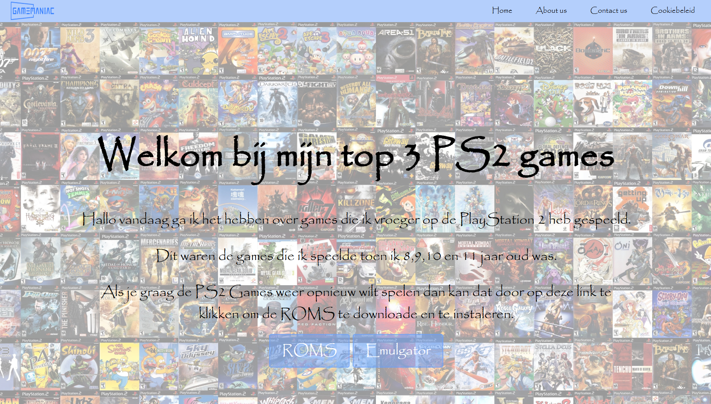

Gamemaniac

PROJECT / JBOver het project
- CSS Grid en Flexbox lay-out
- Semantische HTML structuur
Highlights
Responsive Design
Optimaal voor alle schermgroottes
Modern Design
CSS Animaties en transitions
📱 Responsive Layout
Werkt op alle apparaten en browsers
Technologie Stack
HTML
CSS